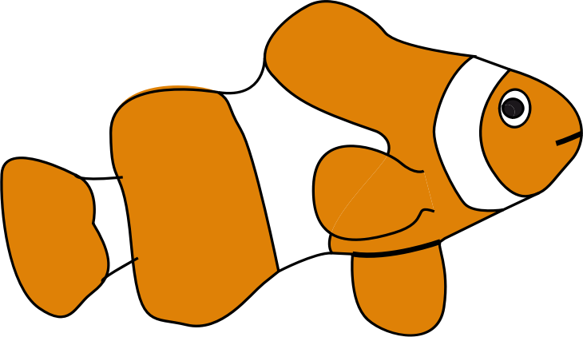
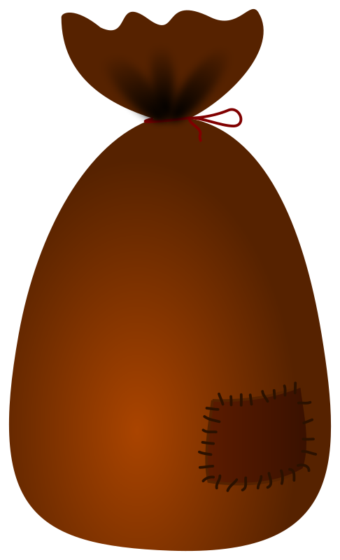
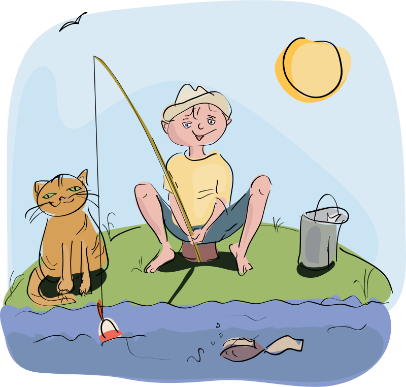

Live DevLog
| 03 Mar 2018 |
| 15:35:08 | MEDICAL | But as I'm still not well, first a little break |
| 15:34:44 | STUPIDITY |  And I think I know why XD And I think I know why XD |
| 15:34:26 | BUG |  Okay, Ryanna bug fixed, but now all I see is a black screen... Okay, Ryanna bug fixed, but now all I see is a black screen... |
| 15:15:14 | BUG | System now appears unable to properly locate Ryanna |
| 15:14:58 | CONFIRMED |  fix,however fix,however |
| 15:08:17 | FIXED |  I think I fixed it I think I fixed it |
| 15:04:17 | BUG | Crash! |
| 14:56:13 | FIXED | Kthura code typo |
| 14:34:46 | DONE |   Ryanna will shrug her shoulders when fishing failed (which will currently always happen as the checker will for now always return nil). Ryanna will shrug her shoulders when fishing failed (which will currently always happen as the checker will for now always return nil). |
| 14:22:42 | DONE | Ryanna will be shown holder her fishing rod when fishing |
| 14:21:09 | FIXED | Size error Kthura |
| 14:15:54 | FAILURE |  I wish I had a dollar for every time my browser froze my entire system I wish I had a dollar for every time my browser froze my entire system |
| 14:10:27 | LINK |  Stage skeleton linked to fishing main routine Stage skeleton linked to fishing main routine |
| 13:29:15 | SCRIPT |  set out a skeleton table to handle all the different stages of fishing set out a skeleton table to handle all the different stages of fishing |
| 10:36:56 | MEDICAL | I'm not 100% today, and I feel it's slowly getting worse, so I hope I can get things done today, although I must not push things |
| 10:33:39 | CONFIG |  More config done More config done |
| 09:29:01 | TODO |  Eating some more and fetching some coffee! Eating some more and fetching some coffee! |
| 09:27:56 | CONFIG | Bed configurator |
| 09:08:24 | CONFIG | Init Fishing level |
| 09:07:49 | DONE | Error catching non-existent fishing spot |
| 09:03:40 | LINK | Init to spot |
| 09:01:09 | ART |  So far the art part of the job So far the art part of the job |
| 08:57:22 | ART | Fish Pointer |
| 08:53:18 | ART | Ryanna Fish Fail |
| 08:49:52 | ART | Ryanna Catch |
| 08:35:03 | ART | Fishing Ryanna |
| 02 Mar 2018 |
| 22:09:51 | BACKUP |  So let's fire it up again! So let's fire it up again! |
| 22:09:35 | FAILURE | It seems the backup didn't start up for some reason |
| 22:08:05 | FIXED | #72 |
| 20:45:28 | BACKUP | Running! |
| 20:45:23 | STATUS |  But I wanna call it a day, so I have to stop somewhere, that's why I issued it as #72 But I wanna call it a day, so I have to stop somewhere, that's why I issued it as #72 |
| 20:45:04 | BUG | #72 
|
| 20:37:31 | FIXED | Fixed it! |
| 20:31:15 | COCKROACH |  For some reason the fish database doesn't make its Lua dump.... Why? For some reason the fish database doesn't make its Lua dump.... Why? |
| 20:27:23 | SOLVED |   |
| 20:25:06 | COCKROACH | WTF? |
| 20:23:31 | FIXED | Link issue |
| 20:23:25 | CONFIRMED | Fix confirmed |
| 20:21:35 | FIXED | WalkTo Issue |
| 20:19:52 | DONE | SetArrival() |
| 20:16:15 | FIXED | That's fixed....
Sorry, dude, I don't tolerate crashing!
|
| 20:11:54 | BUG | CRASH! |
| 20:08:44 | FIXED | fixed? |
| 20:07:02 | SOLVED | Aha! |
| 20:05:40 | BUG | Link ingored |
| 20:01:45 | LINK | I did write some link up code, however as soon as the link up to the fishing routine activates the game will for now crash with an artificial error |
| 19:15:05 | NOTE |  As the achievement system is not yet done in the game I cannot yet link the achievement system to it yet As the achievement system is not yet done in the game I cannot yet link the achievement system to it yet |
| 19:14:21 | GAMEJOLT |  Added Trophy "My only wish, is to catch a fish, so juicy sweet" Added Trophy "My only wish, is to catch a fish, so juicy sweet" |
| 19:13:42 | GAMEJOLT | Added trophy "Rock and pool, is nice and cool, so juicy sweet" |
| 19:08:38 | NOTE | Due to me being ill once more there was not much I could do (unfortunately) |
| 15:37:06 | FIXED | #71 |
| 15:37:02 | CONFIRMED | YES! |
| 15:34:53 | SOLVED | I think I solved the case |
| 13:54:57 | DEBUG |  Tiny bit more data required Tiny bit more data required |
| 13:52:06 | DEBUG | Let's see if this debug line gives more information as the log doesn't! |
| 13:46:36 | COCKROACH | The bug is not yet fixed, but hopefully some debug data has been generated |
| 13:43:04 | INVESTIGATION | Investigated #71 |
| 13:34:53 | MEDICAL | Once again, I feel terrible.... This is really getting annoying. Not just because of this game suffering setbacks due to that, but also because feeling terrible is also a terrible experience.... sigh |
| 01 Mar 2018 |
| 20:04:57 | STATUS |  Calling it a day, bye! Calling it a day, bye! |
| 20:03:49 | BACKUP | Running |
| 20:03:32 | STATUS | I need my rest now and I fear this is gonna be a cockroach so I issued this as #71 so I can approach this bug in a more relaxed manner |
| 20:02:39 | GITHUB |  Current work pushed Current work pushed |
| 20:02:32 | ALPHA |  Updated Updated |
| 20:01:22 | BUG | #71 |
| 19:57:28 | FIXED | Ah, a casing error was the evil here... :-/ |
| 19:54:52 | BUG | But now it crashes when I want to remove the rod from the field.... |
| 19:54:34 | FIXED | Indeed |
| 19:52:09 | SOLVED | I think I found it |
| 19:46:49 | BUG | I wonder what causes this... :-/ |
| 19:46:37 | DUMP | !!FATAL ERROR!!!
Error
[string "Script/Flows/field.rel/field.lua"]:377: attempt to call a nil value
Traceback
[string "Script/Subs/Error.lua"]:59: in function <[string "Script/Subs/Error.lua"]:24>
[string "Script/Flows/field.rel/field.lua"]:377: in function 'odraw'
[string "Libs/killcallback.rel/kcb.lua"]:69: in function 'draw'
[C]: in function 'xpcall' |
| 19:42:45 | TEST |  Let's try it again! Let's try it again! |
| 19:42:28 | FIXED | False markers due to earlier bug in Kthura script |
| 19:36:43 | TEST | Now I can finally begin to test |
| 19:36:30 | SCRIPT | Fishing pole on map |
| 17:55:21 | GITHUB | Put a checklist in #12 |
| 17:54:08 | DONE | The GiveTool() routine, which should activate the tool in the menu |
| 17:51:50 | RYANNA |  I can't test if this works the way it should right away, I can only hope so... I can't test if this works the way it should right away, I can only hope so... |
| 17:51:29 | GO |  Compiling Ryanna Compiling Ryanna |
| 17:41:38 | ENHANCEMENT |  Ryanna now supports the "init" method for library initations Ryanna now supports the "init" method for library initations |
| 17:38:24 | DONE | Iconstrip setting on tools |
| 17:34:29 | MAP |  dded "Tool Pass" to the passage in the Beaufort Forest. These places will be passible with tools even when they are otherwise unpassible dded "Tool Pass" to the passage in the Beaufort Forest. These places will be passible with tools even when they are otherwise unpassible |
| 17:30:21 | TUTORIAL |  Tool hover tutorials Tool hover tutorials |
| 17:25:23 | CONFIG | #2 Tool pictures |
| 13:29:47 | BACKUP | In the meantime I'll run the backup |
| 13:29:39 | STATUS | Before all that I now have to attend to "real life".... Not sure if time will allow me to continue today |
| 13:27:49 | STATUS | And with that the preparational work is almost done, now it's time to make Ryanna actually obtain the rod |
| 13:26:29 | NOTE | The document noted in #70 will be an .md file where the fishing itself is explained in the deep. |
| 13:25:58 | TUTORIAL | Fishing |
| 13:17:38 | TODO | #70 |
| 13:09:11 | MAP | Fishing Spot placed |
| 12:50:56 | KTHURA |  Okay it works Okay it works |
| 12:49:21 | FIXED | Aha! |
| 12:49:00 | BUG | No ignores, but crashes.... How come... |
| 12:47:44 | TEST | Let's try that again |
| 12:47:38 | FIXED | Aha, that was a code typo |
| 12:47:17 | BUG | Kthura appears to ignore my request to put in the fishing spot |
| 11:47:26 | GAMEJOLT | more work |
| 11:00:53 | KTHURA | Fishing spot scripted |
| 10:41:39 | GAMEJOLT | Work! Work! Work! |
| 28 Feb 2018 |
| 16:51:57 | BACKUP | Running |
| 16:51:52 | NOTE | Some real-life stuff to be done |
| 16:40:42 | KTHURA | Created item for fishing spots |
| 16:32:52 | GITHUB | First pushes |
| 16:32:45 | LICENSE |  up-to-date up-to-date |
| 16:14:20 | FISH | Piranha |
| 16:12:37 | ITEM | Piranha |
| 15:55:44 | FISHING | This junk has been set up to be fished up |
| 15:53:17 | FISH | Rusty can |
| 15:51:28 | FISHING |  Created a spot record for Beaufort Forest Created a spot record for Beaufort Forest |
| 15:50:03 | CONFIG | Defaultsettings |
| 15:49:02 | TECHNO |  Each fishing spot can hold up to 10 fishes max, and also up to 10 monsters max.... Each fishing spot can hold up to 10 fishes max, and also up to 10 monsters max.... |
| 15:48:38 | DATABASE | Fishing spots |
| 15:32:46 | LINK | Linked with the fishing routine (as far as you can already speak of a "routine" at this point). |
| 15:31:54 | DATABASE | Will now general Lua output of the fishes in the database |
| 15:29:44 | LINK | Fishing data linked to game data, and due to that all data will now be automatically saved and loaded in savegame as soon as you fished for the first time in the game.... |
| 15:25:36 | NOTE | Please note, you do not get points per fish, the best score for each unique fish counts, and that will determine your level. |
| 15:25:10 | DATABASE | Score rate set.... |
| 15:21:35 | DATABASE | Added a fish rate... This number will determine the likeliness to catch a certain fish, and also the minimal level you need to catch one in the first place.... |
| 15:20:40 | FISHING | A little correction.... Max level is 15 now |
| 15:19:38 | FISHING | named all levels |
| 15:10:07 | TECHNO | It's just easier to code to make this shoe count as a "fish" |
| 15:09:54 | FISH | Old Shoe |
| 15:09:03 | FIXED | Database fix |
| 15:08:06 | SITE |  Added tag FISH Added tag FISH |
| 15:06:47 | SITE | Added tag FISHING |
| 14:52:55 | DATABASE | Fish database |
| 14:37:26 | NOTE | yeah, come on, peeps, everybody knows you fish up old shoes when fishing.... |
| 14:37:01 | ITEM | Old shoe |
| 26 Feb 2018 |
| 23:18:14 | STATUS | Not much I could do today |
| 23:18:05 | TODO | #69 |
| 25 Feb 2018 |
| 21:40:53 | STATUS | It'll depend on how my next two days go if I'll be able to work on Cynthia and on spellchecking my novel more. The activity on 63 will likely resume on Wednesday |
| 21:39:13 | BACKUP | Running |
| 21:37:45 | GITHUB | All stuff pushed |
| 21:34:00 | ALPHA | Updated |
| 21:33:47 | STATUS | I'll call it a day right there for now.... I'll get onto getting the fishing pole and all other stuff later, and the full chain test (which I expect to work) |
| 21:26:34 | MAP | Area 002 added to forest |
| 21:09:06 | STATUS | And so far the artwork I needed |
| 21:08:54 | ART | Sign |
| 21:06:43 | ART | Pond Texture South |
| 21:06:35 | ART | Pond Texture Centre |
| 17:58:05 | ART | Fishing pole for in the field (Ryanna can pick this up to get her first tool). |
| 17:47:04 | PHANTASAR | More chapters corrected. That job is getting near completion! |
| 16:09:34 | DONE | I did need some rest... |
| 14:15:21 | JUDGMENT |  I do think a kind of sound effect is needed for leveling up though I do think a kind of sound effect is needed for leveling up though |
| 14:14:25 | DONE | IT WORKS!!! AT LAST!!!!! |
| 14:09:46 | TEST | Another |
| 14:09:39 | OFFTOPIC |  I guess that didn't make sense... :P I guess that didn't make sense... :P |
| 14:09:24 | FIXED | Eternally leveling up without actually going level up |
| 14:04:39 | TEST |
|
| 14:04:34 | FIXED | EXP==0 != level up |
| 14:00:53 | TEST | Well does it work, or doesn't it? |
| 14:00:45 | DONE | Stat adept to new level |
| 14:00:37 | LAURA |  Experience fixup Experience fixup |
| 13:58:44 | COSMETIC |  Scale fine tine Scale fine tine |
| 13:58:35 | COSMETIC | Shortened time "Level Up" effect display |
| 13:55:00 | TEST | Let's see how that looks |
| 13:54:37 | COSMETIC | Level Up Ending angle changed |
| 13:52:59 | JUDGMENT | Crucial bugs fixed, but now a little fine tuning |
| 13:47:22 | STATUS | Let it work now.... please! *puppy eyes* |
| 13:47:11 | FIXED | Nil |
| 13:46:16 | COCKROACH | This routine is not allowed to work under the penalty of death! |
| 13:43:19 | STUPIDITY | Yeah I can also mess up my debug lines... UUURGH! |
| 13:42:55 | FIXED | Debugger |
| 13:37:03 | FIXED | Monster Data fix: Eye Blob name |
| 13:36:54 | TEST | And let's see what happens next |
| 13:36:08 | FIXED | But I tackled another one |
| 13:35:58 | COCKROACH | not the later ones though |
| 13:35:48 | CONFIRMED | Okay, the earlier check bugs are fixed |
| 13:30:22 | TEST | And another test required |
| 13:30:16 | DEBUG | Recovery cheat |
| 13:24:02 | OFFTOPIC | Yeah, it's getting boring, eh? |
| 13:23:49 | TEST | Another test |
| 13:23:35 | FIXED | Nil! |
| 12:58:58 | TEST | Another test |
| 12:58:54 | FIXED | Calculation error |
| 12:58:30 | COSMETIC | Shade effect to make mini messages better readable |
| 12:53:40 | TEST | Another test |
| 12:53:32 | GAMEJOLT | Work work work |
| 12:29:01 | FIXED | I think I fixed that |
| 12:26:51 | BUG | I don't see any experience calculations, yet there is a crash |
| 12:20:46 | TEST | Time to test this all out (and I think this ain't gonna be easy). |
| 12:19:49 | DONE | "Level Up" graphical effect |
| 11:48:36 | COSMETIC | Level Cap shown in the field |
| 11:46:29 | FIXED | Quick ifx |
| 11:11:21 | NOTE | Ryanna will not yet level up, as that system is not yet available!!! |
| 11:10:16 | DONE | The system giving experience points if applicable should now work. |
| 11:04:08 | CONFIG | Experience rates per difficulty setting |
| 11:02:45 | FIXED | Experience ignored in foe compiler |
| 10:46:22 | GITHUB | I was several commits behind on the libraries. Commited and pushed them all now. |
| 10:40:07 | ENHANCEMENT | Inc and Dec for stats |
| 24 Feb 2018 |
| 22:34:29 | STATUS | I could not do as much as desired... It is already known that I have more time tomorrow that I usually have on Sunday, and I will see if I can use that to take care of a few battle things, and maybe also make a first start to fishing. |
| 22:32:59 | BACKUP | Is running |
| 22:32:28 | ALPHA | Updating on itch |
| 22:32:09 | UPDATED |  #4 #4 |
| 22:30:57 | CONFIRMED | Enemy's HP bar does not appear in combat when playing hard mode! |
| 22:30:42 | NOTE | I'll check #64 later |
| 22:30:04 | VERIFIED | #63 |
| 22:09:47 | UPDATED | #60 , although the Casual crystals are the only ones fully tested right now |
| 22:08:00 | GITHUB | The issues I closed are now at least pushed, so the github repository is up-to-date ;) |
| 22:07:23 | GO | Some information about golang/go#23749 is presented.... It's hard to say if this is gonna help me at this point, but we'll find out.... |